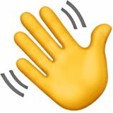

emoj
we
Make emojis that include everyone ❤️
✌ ✌🏻 ✌🏼 ✌🏽 ✌🏾 ✌🏿 →
〰〰〰
Emoji
👶 Baby
👼 Baby Angel
🛀 Bath
🚴 Bicyclist
👦 Boy
👰 Bride With Veil
👠Clapping Hands Sign
👷 Construction Worker
💃 Dancer
👂 Ear
💆 Face Massage
🙅 Face With No Good Gesture
🙆 Face With OK Gesture
🅠Father Christmas
👊 Fisted Hand Sign
💪 Flexed Biceps
👧 Girl
💂 Guardsman
💇 Haircut
🙋 Happy Person Raising One Hand
💠Information Desk Person
👨 Man
👲 Man With Gua Pi Mao
👳 Man With Turban
🚵 Mountain Bicyclist
💅 Nail Polish
👃 Nose
👌 OK Hand Sign
👴 Older Man
👵 Older Woman
👠Open Hands Sign
🚶 Pedestrian
🙇 Person Bowing Deeply
🙠Person Frowning
🙌 Person Raising Both Hands in Celebration
⛹ Person With Ball
👱 Person With Blond Hair
🙠Person With Folded Hands
🙠Person With Pouting Face
👮 Police Officer
👸 Princess
✊ Raised Fist
✋ Raised Hand
🖠Raised Hand With Fingers Splayed
🖖 Raised Hand With Part Between Middle and Ring Fingers
🖕 Reversed Hand With Middle Finger Extended
🚣 Rowboat
🃠Runner
🤘 Sign of the Horns
🕵 Sleuth or Spy
🄠Surfer
🊠Swimmer
👠Thumbs Down Sign
👠Thumbs Up Sign
✌️ Victory Hand
👋 Waving Hand Sign
🋠Weight Lifter
👇 White Down Pointing Backhand Index
👈 White Left Pointing Backhand Index
👉 White Right Pointing Backhand Index
👆 White Up Pointing Backhand Index
☝️ White Up Pointing Index
👩 Woman
✠Writing Hand
Platform
Apple
Google
Twitter
Download GIF
Preview
Examples
